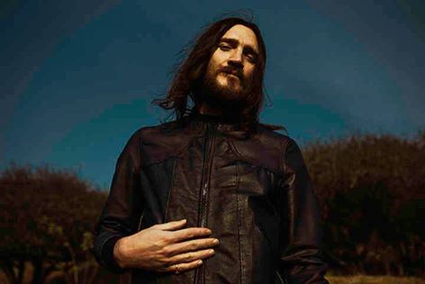
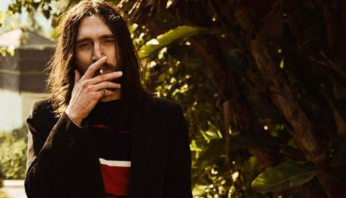
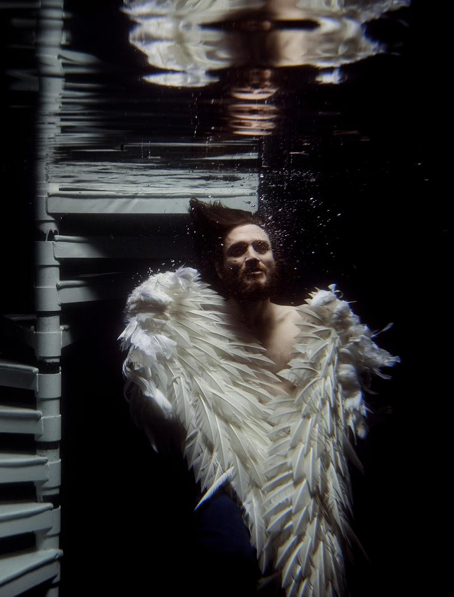

To szczególny album w twórczości Johna Frusciante. Nagrywany długo i pieczołowicie, stanowiący pod względem treści i oprawy muzycznej spójną koncepcyjną całość. Poprzedzający istotną życiową i artystyczną decyzję – odejście Johna po raz drugi z RHCP.
Gdyby zrobić wśród fanów Johna Frusciante sondę na temat ich ulubionego albumu solowego tego artysty z dużą dozą pewności można zaryzykować stwierdzenie, że “Empyrean” zajmie pierwsze miejsce. W wielu recenzjach mowa o tym, że jest to prawdziwe “opus magnum” muzyka, powstałe przy wsparciu jego wiernego muzycznego kompana Josha Klinghoffera oraz Flea i Johna Marra. Ale nie tylko muzycznie ta płyta wyróżnia się w bogatej dyskografii Frusciante. Również idea tego albumu i napisane nań teksty czynią go szczególnym, poruszającym dziełem.
Jak przyznał sam Frusciante, tym razem nie tworzył tekstów improwizując, ale mozolnie próbował zawrzeć w nich z góry zaplanowaną treść. “W tym przypadku, chciałem wyrazić w tekstach coś wyjątkowego i robiłem poprawkę za poprawką, aż wreszcie każda linijka miała jakieś znaczenie, przynajmniej dla mnie. To, co moje słowa znaczą dla innych zależy od tego, gdzie właśnie znajdują się w swoim życiu i co jest dla nich interesujące, ale prawdziwy sens może przeniknąć bezpośrednio do ich podświadomości, choć świadomie rozumieją słowa lub ich nie rozumieją.” – wyjaśniał artysta w wywiadzie dla magazynu Guitar Player w 2009 roku.
Tajemnicze miejsce
O czym mówi ten „podprogowy przekaz”? Frusciante długo bronił się w wywiadach przed „rozbieraniem” na czynniki pierwsze „Empyrean”. Zasłaniał się abstrakcyjną ideą, niemożliwością opowiedzenia o swoim wewnętrznym świecie, niemniej z czasem chętniej zaczął wyjaśniać, co miał na myśli. Dziennikarzowi japońskiego magazynu Crossbeat tak wytłumaczył tytuł płyty: „Empyrean” oznacza najwyższy poziom nieba, ale chciałem dać taki tytuł płycie z wielu powodów. Ludzie mogą próbować osiągnąć cel, którego położenia nie znają i czasami trafiają zupełnie gdzie indziej. To nieskończone odkrywanie i poszukiwanie. Każdy człowiek pragnie odkrywać to, czego chce i każdy musi się z tym zmagać. Empireum to nieznane, tajemnicze miejsce, do którego chcą trafić ludzie.” Wiele o przekazie albumu mówi też inne zdanie z tego wywiadu „…jeśli próbujesz wspiąć się na górę i dasz za wygraną w połowie drogi, możesz nadal wspiąć się na inną górę dzięki reszcie energii, którą ocaliłeś poddając się podczas pierwszej wspinaczki.”
To, że w przypadku „Empyrean” mamy do czynienia z koncept albumem sygnalizują już tytuły. Otwierający „Before The Beginning” i zamykający „After The Ending” wyraźnie określają, że mamy do czynienia z zamkniętą opowieścią, historią. Ten pierwszy ma szczególny charakter. Długi, instrumentalny, o wolnym tempie i charakterystycznym gitarowym motywie wyraźnie odbiega od typowych „otwieraczy” albumów. To nie jest hitchcockowski wybuch wulkanu w rodzaju „By the Way” czy „Dani California”, by posłużyć się przykładem z paprykowego podwórka. To raczej świadomie zaplanowane i skonstruowane wprowadzenie w muzyczną przestrzeń płyty, czas potrzebny na skupienie się i skoncentrowanie na tym, czego słuchamy.
Syreni śpiew
Nieco zaskakujący jest drugi utwór – cover piosenki Tima Buckleya „Song To The Siren”. Zaskakujący, bo to dość dziwny wybór, by na autorskim concept albumie umieścić piosenkę innego artysty – nawet tak dobrego jak Buckley i nawet tak piękną jak „Song…”. Zaskakujący również dlatego, że wyraźnie odbiega swoją tematyką od reszty, bo „Song..” to piosenka miłosna. Ten utwór uwiódł wielu wykonawców (m.in. Sinead o`Connor, George Michaela, Elisabeth Fraser, Roberta Planta i grupę This Mortal Coil), trudno dziwić się Johnowi Frusciante, tak chętnie zmagającemu się z najbardziej ckliwymi miłosnymi piosenkami „ever”, że również sięgnął po tę kompozycję. „Song…” odwołuje się do mitycznej opowieści o syrenach, które swoim śpiewem wabiły żeglarzy. Bohater porównuje się do takiego żeglarza, który usłyszawszy kuszące syrenie wołanie „rozbił się” na skałach obojętności i teraz czuje się oszukany, zraniony, chory z miłości. Syrena zmieniła zdanie, a on nie wie czy posłuchać jej rozkazu i odejść czy zostać i wybrać śmierć?
Jak można zinterpretować rolę tej piosenki w całej historii? Czy ten miłosny zawód i dojmująca samotność porzuconego bohatera jest przyczyną zagubienia, zejścia z właściwej drogi pojawiającego się w pierwszej zwrotce „Unreacheable”? Czy negatywne uczucia wypełniają głowę bohatera i nie pozwalają mu jasno myśleć? Frusciante wzywa do tego, by próbował poznawać swój wewnętrzny świat i w ten sposób zmieniał na lepsze świat zewnętrzny. Ta próba może się zakończyć niepowodzeniem, ale daje poczucie że usiłowaliśmy dotrzeć na jakiś wyższy poziom, rozwinąć się.
Śmierć i odrodzenie
W tym momencie pojawia się kwestia, co właściwie ma być owym wyższym poziomem. W wywiadzie udzielonym w 2009 roku magazynowi Guitarist, Frusciante tak wyjaśnił ideę: „Pragniemy rzeczy, które są poza naszym zasięgiem. Przez próbę ich osiągnięcia wzrastamy, zmieniamy się i otwieramy jako ludzie. Ale czasem w takim procesie wzrostu konieczne jest poddanie się czy nawet doświadczenie czegoś w rodzaju „śmierci” – może to być zarówno śmierć fizyczna, jak i rodzaj śmierci związanej z porażką, stratą, upadkiem, śmierci z której się odradzasz. Album od strony tekstów wędruje nieustannie między szaleństwem i pomieszaniem, a poczuciem, że myśli stają się jasne, potem znów wraca do obłędu i znów stopniowo ulega rozjaśnieniu. Tak samo jest jeśli chodzi o muzykę.”
Kolejny utwór „God” przedstawia koncepcję, że każdy z nas jest częścią Boga, że każdy z nas na bieżąco coś tworzy. Osoba narratora płynnie przechodzi między Bogiem, a człowiekiem. W starotestamentowym Bogu Ojcu kierującym żywiołami możemy zobaczyć człowieka. Bóg słyszy modlitwy, bo jest każdym z nas. Musimy tylko uwierzyć, by posiąść boską moc, musi w to zwłaszcza uwierzyć artysta – tym tekstem Frusciante włącza się w odwieczny dyskurs o boskim pierwiastku obecnym w umyśle twórcy, czy w umyśle człowieka jako takiego.

Dysputa Dobra i Zła
O ile „God” namawia do poczucia w sobie sprawczej boskiej siły, o tyle w „Dark/Light” znów mamy niepewność, zagubienie, bezsilność, poczucie niemożności pokonania przeciwieństw, przekonanie o nieuchronnej porażce.
„I’ll always be less that my other selves
So I feel like I’m competing with someone else
Who I could never beat in a million years
I was made to think that we would wind up round here.”
Zmienną amplitudę uczuć podkreśla muzyka. „Album rozpoczyna się gdzieś w ponurych, dolnych rejestrach, a potem muzyka zaczyna nas wznosić wyżej i wyżej. Osiąga szczyt, potem opada, potem znów się zaczyna wznosić, osiąga kolejny szczyt i znów szybuje w dół. Koniec albumu jest „najwyższy” pod względem częstotliwości i wibracji – próbowałem zachować wrażenie ciągłego wznoszenia . To dlatego w ostatniej piosence nie ma basu i bębna basowego – to oddaje uczucie unoszenia się w stosunku do reszty płyty.” – wyjaśniał Fru dziennikarzowi „Guitarist”. Słuchacze zaś dopatrują się w „Dark/Light” dialogu bohatera z Bogiem albo dysputy między Światłem i Ciemnością.
„Heaven” wbrew tytułowi wcale nie opowiada o niebiańskim bycie. Niebo to raczej pogodzenie się z upływem czasu i przemijaniem zrodzone wskutek rozmyślań bohatera, wskutek refleksji nad miałkością naszej ziemskiej egzystencji i krótkości czasu w zestawieniu z nieskończonym kosmosem. O „Enough Of Me” sam Frusciante powiedział, że mówi o zmartwychwstaniu. Choć początek nie wydaje się zbyt optymistyczny:
„Wszystko co wygrałem, straciłem
Każda mijająca chwila odcina mnie
Cóż, nie lubię marnować szans, ale one odpływają
To, czego nie robię, zostanie zrobione przez kogoś innego.”,
To w dalszej części utworu pojawiają się wyraźne symbole i odniesienia do ponownych narodzin. Wspomnienie obserwowanych w dzieciństwie kiełkujących roślin oraz zapewnienie:
„Cokolwiek wymyka się z naszych rąk
Znajdzie drogę powrotną do nas raz jeszcze”,
dają nadzieję na nowe, odzyskane życie. Tu warto przytoczyć jeszcze jeden komentarz Johna: „W tekstach jest wiele rzeczy, które przemówią do osób znajdujących się w konkretnym punkcie na ścieżce swojego życia. Jestem pewien, że takie osoby będą mogły z tych tekstów wyciągnąć coś dla siebie. Przemówią też pewnie do tych, którzy mają za sobą podobne do moich doświadczenia. Ale nie myślę o tym w taki sposób – jeśli chodzi o czyjąś wewnętrzną podróż czy świat nie wierzę, by istniała metoda przekazania drugiemu człowiekowi w jasny sposób tego, czego doświadczył inny człowiek.” Tak więc prywatne doświadczenie „zmartwychwstania” Johna jest tu raczej wyczuwalne intuicyjnie niż jasno zakomunikowane – mimo to daje nadzieję na podobne zakończenie ciemnych etapów w naszym życiu.

Centrum niczego
„Central” to jeden z najpopularniejszych utworów z „Empyrean” i bodaj w całej twórczości Fru. Rozpoczynające go słowa „I`m central to nowhere…” potrafi chyba przytoczyć każdy z fanów. Tekst tej piosenki to próba opowiedzenia o samobójstwie, o tym, co spotka nas po śmierci, o tym, co tak naprawdę niepoznawalne, wyznaczenia granicy między bytem i niebytem. „Jeśli coś jest niczym, to nie może być czymś w żaden możliwy sposób.” Ta fraza jest ciekawa, bo zwraca uwagę na swoisty paradoks jakim jest pojecie nicości. Nic nie istnieje, bo gdyby istniało tym samym stałoby się czymś! Ale równocześnie nie można powiedzieć, że nic nie istnieje, bo próbujemy opisać nieopisywalne zjawisko opisującymi pojęciami „nic” i „nie istnieje”.
„One More Of Me” to bodaj najbardziej optymistyczny tekst na płycie. Co ciekawe podobnie jak w „Enough Of Me” pojawiał się motyw „śmierci przed życiem” znany chociażby z wcześniejszego albumu „A Sphere In The Heart Of Silence”, tak tu pojawia się motyw słońca jako życiodajnej siły często przywoływany przez Johna m.in. w filmie „My Heart is a Drum Machine” i przy okazji EP „Outsides”. Dowodzi to zdecydowanie tego, że koncepcja ideowa tego albumu jest powiązana z całokształtem filozofii Johna Frusciante i stanowi raczej jej integralną część niż zamkniętą historię wymyśloną na potrzeby danej płyty.

To co odeszło, nigdy nie wróci
Ale istnieje kiedy myślimy o tym
Co jest niczym innym jak tylko serią myśli przebiegają przez umysł
Wszystkie popieprzone rzeczy, które robisz
Są produktem tego, co ci się przydarzyło
Cokolwiek tworzysz z miłości
Jest darem z miejsca, które niektórzy nazywają niebem
Bo tylko siła nienawiści i miłości
Jedna wszystko psuje, druga buduje”
Zamykająca płytę „After The Ending” zdaje się opowiadać o cyklicznej naturze rzeczy, o tym jak stworzenie i zniszczenie następują tuż po sobie. Mówi o tym jak żyjemy i jak poszukujemy sensu życia, ale także o tym, że nasze życie wydaje się tak mało istotne w bezmiarze wszechświata. Ale gdy Frusciante śpiewa „Nie ma nic po końcu” niekoniecznie należy to odczytywać pesymistycznie, bo gdy popatrzymy na całość tekstu jasno okazuje się, że nie ma żadnego końca. Wszyscy jesteśmy częścią nieskończonego bytu. Wszystko, co się kiedykolwiek przydarzyło, nie może zostać wymazane, wszystko jest wieczne.